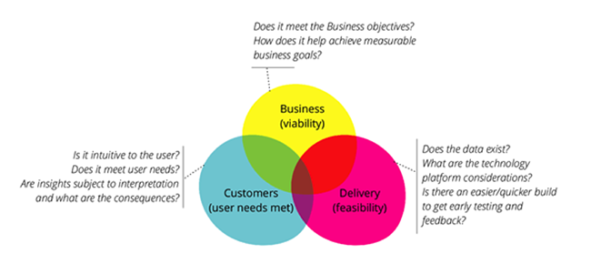

Time to set up our R-Studio to share interactive documents.
Viewing on the website.
Make a new Rmd file that just has the following in it (including the default yaml).
library(DT)
datatable(iris)Putting information in your file My interactive

Looks like the task doesn’t require it. I wanted you guys to see this package and understand the potential if you need it in the future - Link.
Use the links on this page to try and describe what ts, xts, and zoo formats are in R?
We are not going to take the time to get into the weeds of xt, xts, zoo. Here are two locations where you can read till your heart is content - 1, and 2.
Q: Why is xts implemented as a matrix rather than a data frame?
xts uses a matrix rather than data.frame because: 1) xts is a subclass of zoo, and that’s how zoo objects are structured; and 2) matrix objects have much better performance than data.frames.
Q: Why should I use xts rather than zoo or another time-series package?
The main benefit of xts is its seamless compatibility with other packages using different time-series classes (timeSeries, zoo, .). In addition, xts allows the user to add custom attributes to any object. See the main xts vignette for more information.
Write out what this function is doing.
tq_transmute(select = adjusted,
mutate_fun = periodReturn,
period = "daily",
type = "log")quantmod::periodReturn()Write out what this function is doing.
tq_portfolio(assets_col=symbol,
returns_col=daily.returns,
weights = tibble(asset.names = friend, weight = c(0.259,.534,.207)),
wealth.index = T)PerformanceAnalytics::Return.portfolio()“The most exciting phrase to hear in science, the one that heralds new discoveries, is not ‘Eureka!’ but ‘That’s funny…’” -Isaac Asimov
Graphical excellence is that which gives to the viewer the greatest number of ideas in the shortest time with the least ink in the smallest space
Edward Tufte
Open the dygraphs help webstie and implement one of their examples in your local R session.